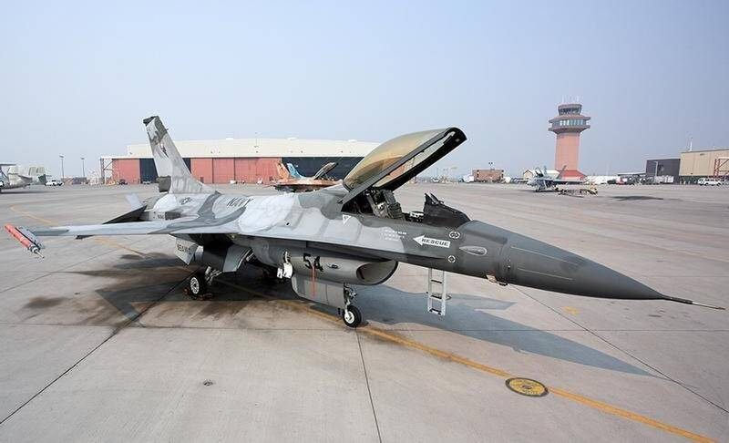

NAS Fallon
Nevada

Home of TOPGUN, the Navy's fighter weapons school. 1
Open in the interactive Watcher
Sources
- Naval Air Station Fallon Wikipedia
Nevada

Home of TOPGUN, the Navy's fighter weapons school. 1
Open in the interactive Watcher